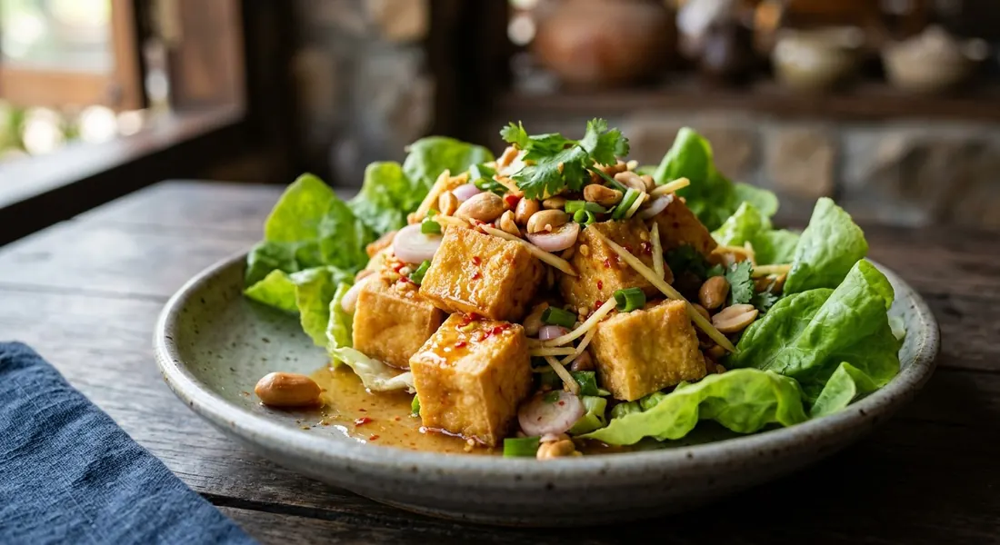

Thai crispy tofu salad — golden fried tofu tossed in a lime and fish-sauce dressing with ginger, shallots, chillies and peanuts, served on lettuce. The vegetarian yum that stands in for the meat salads.

ยำเต้าหู้
Yum tofu is the yum family's answer to tofu: cubes of deep-fried tofu tossed in the same sharp lime-fish-sugar dressing the meat salads wear, with ginger, shallots and chillies, finished with peanuts and served over lettuce. It is the standard vegetarian first course on Thai menus — and, done right, nobody at the table misses the meat.
The dish borrows its architecture from the crispy-catfish salad, yam pla duk foo: something fried and crisp, folded into a sour-hot dressing, served on a leaf. The tofu replaces the puffed fish, and the dressing does the work.
| Thai | English | Amount |
|---|---|---|
| เต้าหู้ขาวแข็ง | Firm white tofu | 2 blocks (400g) |
| น้ำมันพืช | Vegetable oil | for deep frying |
| แป้งข้าวโพด | Cornflour, optional — for the crisp-shell version | ¼ cup |
| Thai | English | Amount |
|---|---|---|
| น้ำมะนาว | Lime juice | 3-4 tbsp |
| น้ำปลา | Fish sauce, or light soy for vegetarian | 2-3 tbsp |
| น้ำตาลปี๊บ | Palm sugar | 2 tbsp |
| พริกขี้หนูแดงซอย | Red bird's eye chilli, sliced | 1-2 tbsp |
| Thai | English | Amount |
|---|---|---|
| ขิงอ่อนซอย | Young ginger, sliced | 2-3 tbsp |
| หอมแดงซอย | Shallots, sliced | 5-6 |
| ต้นหอม | Spring onion | 2 stalks |
| ผักชีฝรั่ง | Sawtooth coriander, sliced | 2 tbsp |
| ใบสะระแหน่ | Mint leaves | to garnish |
| ผักกาดโอ๊กเขียว | Green oak lettuce | to line the plate |
| Thai | English | Amount |
|---|---|---|
| ถั่วลิสงทอด / เม็ดมะม่วงหิมพานต์ทอด | Fried peanuts or cashews | ¼ cup |
Three preps circulate in the sources. The most common is firm white tofu diced and deep-fried until the outside is golden and the inside stays soft. Krua.co gives the second: fry the whole blocks, then halve and slice them thin, so every slice wears a crisp edge. Phol Food Mafia's version uses silken Japanese tofu with a light cornflour coat — the softest centre, with a shattering shell.
Dry before you fry. Wet tofu spits, steams and refuses to brown. The sources press or drain the tofu first; one even simmers it first, then mashes and presses the water out before frying.
The classic dressing is three things — lime juice, fish sauce, palm sugar — dissolved together, sharpened with sliced bird's eye chillies, shallots and young ginger. It is the same dressing as every other yum; the tofu is the variable.
The disagreements are about the base. The cookbook version builds the dressing on nam prik pao, the roasted chilli paste, for a deeper, rounder heat — and its non-vegetarian form adds blanched prawns and cooked minced pork on top of the tofu. Kapook's version swaps the sugar for a soy-based dressing and mashes the tofu with breadcrumbs so it puffs like the catfish salad it descends from. Phol Food Mafia simmers a mirin-soy-vinegar dressing and serves it separately, Japanese-leaning, with pickled ginger. All are published; the lime-fish-sugar version is the one you'll meet most often.
The tofu goes into the dressing at the last possible moment — a light toss, not a soak, so the crunch survives to the table. The aromatics (ginger, shallots, spring onion, sawtooth coriander) go in with it, the plate is lined with oak lettuce, and the peanuts and mint go on top. Sour green mango is a common addition; so are cashews in place of the peanuts.
This is a salad with a countdown. Once the dressing hits the fried tofu, you have minutes before the crisp shell softens into the sauce. Assemble it where it will be eaten.
This recipe is translated from the following Thai-language sources. Where they disagree, we've said so.
1. Krua.co — ยำเต้าหู้กรอบ — https://krua.co
2. Ajinomoto Thailand — ยำเต้าหู้กรอบสมุนไพร — https://recipe.ajinomoto.co.th
3. Phol Food Mafia — ยำเต้าหู้ญี่ปุ่นกรอบ — https://pholfoodmafia.com
4. Kapook Cooking — ยำเต้าหู้กรอบ — https://cooking.kapook.com
5. Cheewajit / A Cuisine — ยำเต้าหู้กรอบ — https://cheewajit.com
6. Wongnai Recipes — ยำเต้าหู้ — https://www.wongnai.com/recipes
7. Wongnai UGC (GuidePok) — ยำเต้าหู้กรอบ — https://www.wongnai.com/recipes/ugc